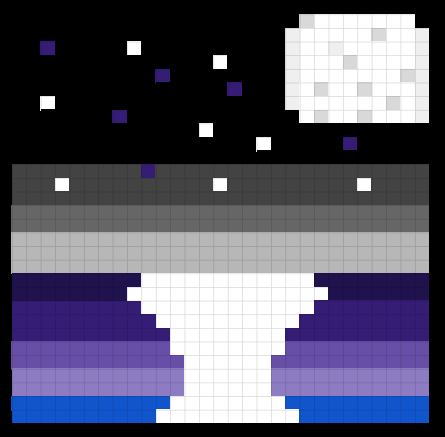

I created my favicon by using google sheets that had 1,024 pixels. Each pixel is made up with a binary code of 0s and 1s, there are a max of 24 sets of binary that make it up. Each byte, 8 bits, make up either red, green, and blue, mixing these make new colors and different shades of them. I colored in each pixel with the color of my choice, the when I was finished I downloaded it as a png from google sheets. I created this favicon as a picture of the moon shining over the sea because I love the night and swimming. I added to this page by uploading it to replit in the file tab then used the link tag to be able to link it to this page.
